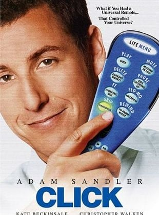
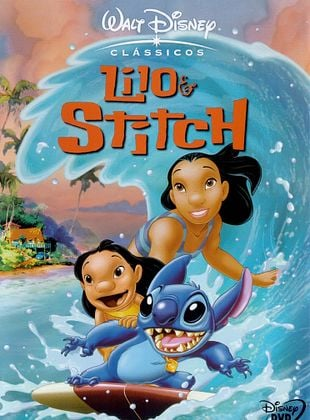
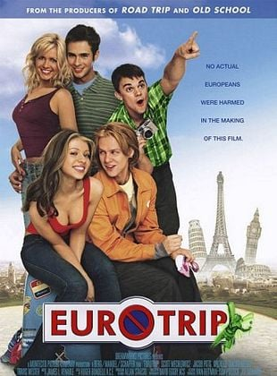

Curiosidade: A cena do milharal em "Interestelar" NÃO é CGI. A cena do milharal em "Interestelar" é real e Nolan plantou 200 hectares de milho para o filme. Plantar o milharal custou cerca de US$ 100 mil e já foi reportado que o estúdio teve quase US$ 162 mil de lucro com as sobras de milho que não foram destruídas após as filmagens.
Click

Título: Click
Autor: Steve Koren, Mark O'Keefe
Duração: 1h 47min
Classificação indicativa: 10 anos
Curiosidade: Como uma piada interna, os nomes de alguns dos membros da equipe de produção foram colocados em algumas lápides na cena do cemitério perto do final de “Click”.
Lilo & Stitch

Título: Lilo & Stitch
Autor: Chris Sanders, Dean DeBlois
Duração: 1h 25min
Classificação indicativa: Livre para todos os públicos.
Curiosidade: Uma das maiores dificuldades da casa do Mickey foi fazer com que as emoções de Stitch fossem compreendidas pelo público, visto que comumente esses sentimentos são transmitidos pelo olhar, mas a criatura extraterrestre não possuía pupilas, o que dificultava esse processo. Dessa forma, os animadores encontraram uma solução: tornaram as emoções parte da linguagem corporal do personagem.
Super-Herói - O filme
Título: Super-Herói - O filme
Autor: Craig Mazin
Duração: 1h 25min
Classificação indicativa: 12 anos.
Curiosidade: O ator Michael Papajohn, que interpreta o assaltante que mata os pais de Rick Riker (Drake Bell), é o mesmo que faz o ladrão no filme "Homem-Aranha" (2002)
Donnie Darko
Título: Donnie Darko
Autor: Richard Kelly
Duração: 1h 53min
Classificação indicativa: 14 anos.
Curiosidade: Frank diz a Donnie que o mundo acabará em 28 dias, 6 horas, 42 minutos e 12 segundos. O filme foi filmado em 28 dias, que é exatamente o período de duração do filme em si. Além disso, há 28 cenas na versão do diretor do filme.
O rei leão
Título: O rei leão
Autor: Linda Woolverton, Lorna Cook
Duração: 1h 29min
Classificação indicativa: Para todos os publicos.
Curiosidade: Pumba foi o primeiro personagem da Disney a ter seu pum exibido em tela.
Eurotrip - Passaporte para a Confusão

Título: Eurotrip - Passaporte para a Confusão
Autor: David Mandel, Jeff Schaffer, Alec Berg
Duração: 1h 30min
Classificação indicativa: 16 anos
Curiosidade: Apesar de ser um filme amado pelos jovens dos anos 2000, Eurotrip – Passaporte Para a Confusão deu um belo prejuízo para o estúdio. Ele arrecadou cerca de 20 milhões de dólares mundialmente, mas teve um custo de aproximadamente 25 milhões de dólares. Por isso, uma sequência ou spin-off jamais foi cogitado.
Projeto X - Uma Festa Fora de Controle
Título: Projeto X - Uma Festa Fora de Controle
Autor: Matt Drake, Michael Bacall
Duração: 1h 27min
Classificação indicativa: 18 anos.
Curiosidade: O filme foi parcialmente baseado na festa oferecida por Corey Worthington, na Austrália. O então adolescente postou o endereço da sua casa no MySpace, que atraiu cerca de 500 pessoas e causou um prejuízo de 20 mil dólares em danos materiais.
American Pie - A 1ª Vez é Inesquecível
Título: American Pie - A 1ª Vez é Inesquecível
Autor: Adam herz
Duração: 1h 35min
Classificação indicativa: 16 anos.
Curiosidade: Quando o script de American Pie foi enviado à Universal Studios, ele possuía um nome diferente, que era "Untitled Teenage Sex Comedy That Can Be Made For Under US$ 10 Millions That Most Readers Will Probably Hate But I Think You Will Love". Traduzindo para o português, o título seria o seguinte: "Comédia adolescente sem título sobre sexo que pode ser produzida por menos de US$ 10 milhões e que muitos leitores provavelmente odiarão mas eu acho que você vai adorar"
Velozes e Furiosos
Título: Velozes e Furiosos
Autor: Gary Scott Thompson, Erik Bergquist e David Ayer
Duração: 1h 47min
Classificação indicativa: 14 anos.
Curiosidade: A casa que serviu de locação para a casa de Toretto no filme está localizada em Los Angeles e é constantemente visitada por fãs da franquia. A casa foi pintada de branco para que nas gravações houvesse mais destaque para as cores vibrantes dos carros.